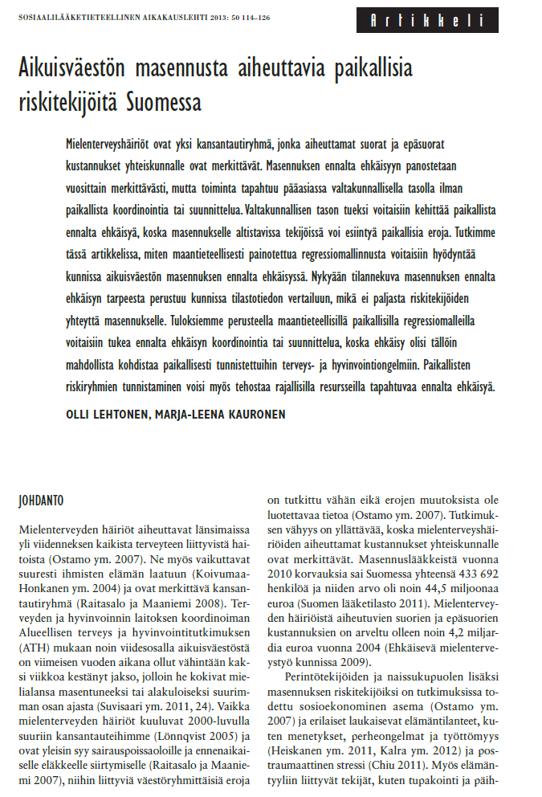
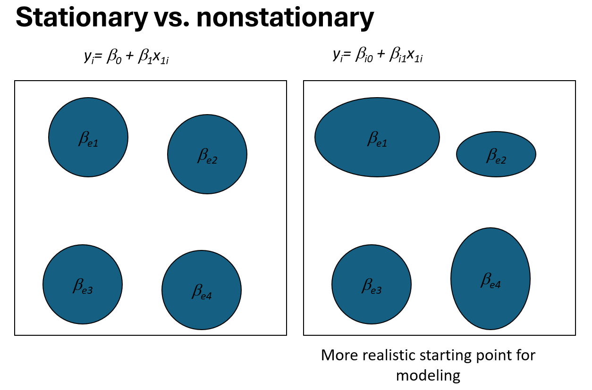
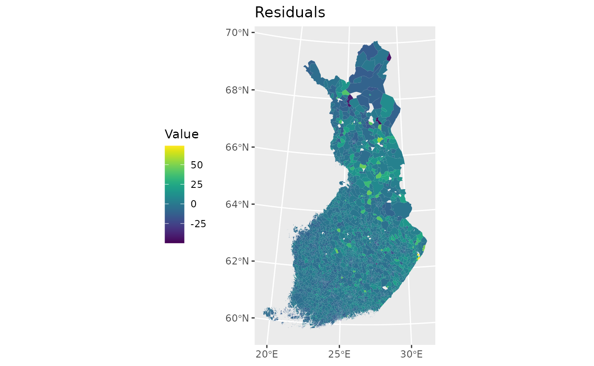
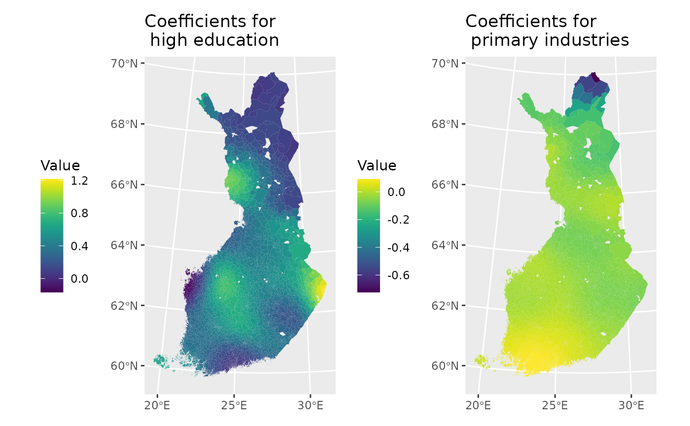

Geographically weighted regression
Geographically weighted regression (GWR) is an exploratory technique mainly intended to indicate where non-stationary is taking place on the map that is where locally weighted regression coefficients move away from their global values. Its basis is the concern that the fitted coefficient values of a global model, fitted to all the data, may not represent detailed local variations in the data adequately. It differs, however, in not looking for local variation in data space but by moving a weighted window over the data, estimating one set of coefficients values at every chosen fit point. The fit points are very often the points at which observations were made, but do not have to be. If the local coefficients vary in space, it can be taken as an indication of non-stationary.
The technique is fully described by Fotheringham et al. (2002) and involves first selecting a bandwidth for an isotropic spatial weights kerner, typically a Gaussian kernel with a fixed bandwidth chosen by leave-one-out cross-validation. Choise of the bandwidth can be very demanding, as n regressions must be fitted at each step. Alternative techniques are available, for example for adaptive bandwidths, but they may often be even more compute-intensive.
In Finnish, you can read the following paper: http://ojs.tsv.fi/index.php/SA/article/viewFile/8714/6405

Geographically Weighted Regression Method
The core idea of the Geographically Weighted Regression (GWR) method is that geographically proximate areas are given greater weight than areas located farther away. Consequently, only nearby areas effectively contribute to the estimation of local regression coefficients. This weighting principle is based on Tobler’s First Law of Geography, which states that things that are near each other are more similar than things that are farther apart (Tobler, 1970). Therefore, spatially close areas contain the most relevant information for estimating local regression coefficients.
The GWR model can be defined as follows (e.g., Brunsdon et al., 1998):
where
-
is the observed value of the dependent variable at location
,
-
is the value of explanatory variable
at location
,
-
is the random error term,
-
are the spatial coordinates of observation
,
and
- and are the local regression coefficients for the intercept and explanatory variable at location .
The GWR model is based on the assumption that observations closer to the target location exert a greater influence on the estimation of parameters than more distant observations.
Estimation of Local Regression Coefficients
The estimation of the local regression coefficients is given by:
where is an spatial weighting matrix whose diagonal elements represent the geographical weights for observation , and whose off-diagonal elements are zero. A separate weight matrix is computed for each observation at which local regression coefficients are estimated.
The observation weight matrix is constructed using a kernel function based on the distances between observation points. Kernel functions are generally classified as either fixed or adaptive.
- In a fixed kernel, the bandwidth (distance radius)
is constant, meaning that the number of neighboring observations can
vary.
- In an adaptive kernel, the bandwidth varies while the number of neighboring observations remains constant.
The elements of the weight matrix are defined as:
Gaussian Kernel Function
A commonly used weighting scheme is the Gaussian kernel, which is defined as:
where is the distance between observation point and regression point , and is the bandwidth parameter that defines the spatial extent within which points influence the estimation of regression coefficients.
When using point coordinates , the distance between two points is computed as the Euclidean distance:
Bandwidth Selection via Cross-Validation
The bandwidth parameter is estimated using cross-validation as follows:
where is the fitted value at location obtained by excluding observation from the estimation. The goal of cross-validation is to predict each observation using the remaining data and select the bandwidth such that:
Statistical Significance of Local Regression Coefficients
Examining local regression coefficients does not provide meaningful insight into the relationship between explanatory and dependent variables if the standard errors of the locally estimated coefficients are large. In such cases, the effect of the explanatory variable on the dependent variable is locally random.
The statistical significance of local regression coefficients can be assessed using either a Monte Carlo test or an adapted t-test. Since the Monte Carlo method is computationally intensive, this study adopts the latter approach. Testing the significance of coefficients allows identification of explanatory variables that exhibit local spatial variation.
The t-statistic for a regression coefficient is calculated as:
which follows a t-distribution with degrees of freedom. This test evaluates whether the estimated regression coefficients differ significantly from zero.
To determine the significance level of the t-test, Byrne et al. (2009, p. 4) propose the following adjustment:
where
-
is the number of effective parameters,
-
is the number of estimated parameters,
-
is the number of observations, and
- is the chosen significance level.
You can choose the significance level based on your data. Normally, it is set to or .
Idea of Geographically Weighted Regression (GWR)
The main motivation for Geographically Weighted Regression (GWR) lies in the recognition that relationships between variables often vary across space. Traditional regression models assume spatial stationarity, meaning that the relationship between the dependent and explanatory variables is constant throughout the entire study area. This assumption is illustrated by the stationary model
where a single set of regression coefficients is applied uniformly to all locations.
In many spatial applications, however, this assumption is unrealistic. Social, economic, and environmental processes frequently exhibit spatial nonstationarity, meaning that the strength and form of relationships change from one location to another. This situation is illustrated in the nonstationary case, where regression parameters are allowed to vary across space:
Here, denote the spatial coordinates of observation , and the regression coefficients are location-specific.
GWR addresses spatial nonstationarity by estimating a local regression model at each observation point rather than fitting a single global model. For each location, observations that are geographically closer are assigned greater weight than those farther away. As a result, locally estimated regression coefficients reflect spatial variation in the underlying relationships.
This approach allows the model to capture spatial heterogeneity that would be masked by a global regression framework. As illustrated by the figure, the stationary model assumes uniform effects across space, whereas the GWR framework provides a more realistic starting point for spatial modeling by allowing regression coefficients to vary in magnitude and spatial extent.

Using GWR with PAAVO (postal code area) data
2. Downloading spatial data from Statistics Finland (WFS)
url <-list(hostname ="geo.stat.fi/geoserver/postialue/wfs",
scheme ="https",
query =list(service ="WFS",
version ="2.0.0",
request ="GetFeature",
typename ="postialue:pno_tilasto_2025",
outputFormat ="json"))%>%
setattr("class","url")
request <-build_url(url)
p25 <-st_read(request)## Reading layer `OGRGeoJSON' from data source
## `https://geo.stat.fi/geoserver/postialue/wfs/?service=WFS&version=2.0.0&request=GetFeature&typename=postialue%3Apno_tilasto_2025&outputFormat=json'
## using driver `GeoJSON'
## Simple feature collection with 3026 features and 113 fields
## Geometry type: MULTIPOLYGON
## Dimension: XY
## Bounding box: xmin: 83748.43 ymin: 6629044 xmax: 732907.7 ymax: 7776450
## Projected CRS: ETRS89 / TM35FIN(E,N)
url <-list(hostname ="geo.stat.fi/geoserver/postialue/wfs",
scheme ="https",
query =list(service ="WFS",
version ="2.0.0",
request ="GetFeature",
typename ="postialue:pno_tilasto_2016",
outputFormat ="json"))%>%
setattr("class","url")
request <-build_url(url)
p16 <-st_read(request)## Reading layer `OGRGeoJSON' from data source
## `https://geo.stat.fi/geoserver/postialue/wfs/?service=WFS&version=2.0.0&request=GetFeature&typename=postialue%3Apno_tilasto_2016&outputFormat=json'
## using driver `GeoJSON'
## Simple feature collection with 3036 features and 113 fields
## Geometry type: MULTIPOLYGON
## Dimension: XY
## Bounding box: xmin: 83748.43 ymin: 6629044 xmax: 732907.7 ymax: 7776450
## Projected CRS: ETRS89 / TM35FIN(E,N)3. Data preparation and merging
names(p16)## [1] "id" "gid" "posti_alue" "nimi" "namn"
## [6] "euref_x" "euref_y" "pinta_ala" "vuosi" "kunta"
## [11] "he_vakiy" "he_naiset" "he_miehet" "he_kika" "he_0_2"
## [16] "he_3_6" "he_7_12" "he_13_15" "he_16_17" "he_18_19"
## [21] "he_20_24" "he_25_29" "he_30_34" "he_35_39" "he_40_44"
## [26] "he_45_49" "he_50_54" "he_55_59" "he_60_64" "he_65_69"
## [31] "he_70_74" "he_75_79" "he_80_84" "he_85_" "ko_ika18y"
## [36] "ko_perus" "ko_koul" "ko_yliop" "ko_ammat" "ko_al_kork"
## [41] "ko_yl_kork" "hr_tuy" "hr_ktu" "hr_mtu" "hr_pi_tul"
## [46] "hr_ke_tul" "hr_hy_tul" "hr_ovy" "te_taly" "te_takk"
## [51] "te_as_valj" "te_nuor" "te_eil_np" "te_laps" "te_plap"
## [56] "te_aklap" "te_klap" "te_teini" "te_aik" "te_elak"
## [61] "te_omis_as" "te_vuok_as" "te_muu_as" "tr_kuty" "tr_ktu"
## [66] "tr_mtu" "tr_pi_tul" "tr_ke_tul" "tr_hy_tul" "tr_ovy"
## [71] "ra_ke" "ra_raky" "ra_muut" "ra_asrak" "ra_asunn"
## [76] "ra_as_kpa" "ra_pt_as" "ra_kt_as" "tp_tyopy" "tp_alku_a"
## [81] "tp_jalo_bf" "tp_palv_gu" "tp_a_maat" "tp_b_kaiv" "tp_c_teol"
## [86] "tp_d_ener" "tp_e_vesi" "tp_f_rake" "tp_g_kaup" "tp_h_kulj"
## [91] "tp_i_majo" "tp_j_info" "tp_k_raho" "tp_l_kiin" "tp_m_erik"
## [96] "tp_n_hall" "tp_o_julk" "tp_p_koul" "tp_q_terv" "tp_r_taid"
## [101] "tp_s_muup" "tp_t_koti" "tp_u_kans" "tp_x_tunt" "pt_vakiy"
## [106] "pt_tyovy" "pt_tyoll" "pt_tyott" "pt_tyovu" "pt_0_14"
## [111] "pt_opisk" "pt_elakel" "pt_muut" "geometry"
p16data<-p16[,c(3,79)]
p16data<-as.data.frame(p16data[,1:2])
colnames(p16data)<-c("posti_alue","tyopy16")
p16data<-as.data.frame(p16data[,1:2])
p25_data <- dplyr::right_join(x = p16data, y = p25, by=c("posti_alue" = "postinumeroalue"))
p25_data$tyopy16[is.na(p25_data$tyopy16)] <- 04. Creating change variables and indicators
p25_data$tp_m22_16<-(p25_data$tp_tyopy-p25_data$tyopy16)
p25_data$tp_m22_16p<-((p25_data$tp_tyopy-p25_data$tyopy16)/p25_data$tyopy16)*100
p25_data$tyottom<-(p25_data$pt_tyott/p25_data$pt_tyoll)*100
p25_data$korkk<-(p25_data$ko_yl_kork/p25_data$ko_koul)*100
p25_data$alkut<-(p25_data$tp_alku_a/p25_data$tp_tyopy)*100
p25_data$elak<-(p25_data$te_elak/p25_data$te_taly)*100
p25_data$as_tih<-(p25_data$he_vakiy/(p25_data$pinta_ala/1000))5. Data cleaning
p25_data2<-p25_data[,c(1,14,67,78,118:122)]
# remove na and inf
p25_data3<-p25_data2 %>%
filter_all(all_vars(!is.infinite(.)))
p25_data4<-p25_data3 %>%
filter_all(all_vars(!is.na(.)))7. Spatial weights matrix (k‑nearest neighbours)
library(spdep)
data.coords<-st_centroid(st_geometry(data2), of_largest_polygon=TRUE) # Extracts the coordinates of each postcode area
p25_kn6<-knn2nb(knearneigh(data.coords,k=6,longlat = F)) # Returns a matrix with the indices of points belonging to the set of the k nearest neighbours of each other## Warning in knearneigh(data.coords, k = 6, longlat = F): dnearneigh: longlat
## argument overrides object
p25_kn6_w<-nb2listw(p25_kn6)8. Preparing GWR
This section demonstrates the main steps of a GWR analysis using R.
8.1 Required Libraries
We begin by loading the necessary R packages for spatial data handling, regression modeling, and visualization.
8.2 Preparing Spatial Data
GWR requires spatial coordinates. We compute centroids for the spatial units and transform them to WGS84 (EPSG:4326). Variable names are standardized for consistency.
cntrd = st_centroid(data2)%>%
st_transform(3067) %>%
clean_names()## Warning: st_centroid assumes attributes are constant over geometries9. Global Linear Regression Model
As a baseline, we first fit a global ordinary least squares (OLS) model. This model assumes that relationships between variables are the same everywhere in the study area.
model_lm=lm(tyottom~ korkk+alkut+elak+as_tih+he_kika_x+ra_as_kpa_y, data=cntrd)
summary(model_lm) # look the results of the model##
## Call:
## lm(formula = tyottom ~ korkk + alkut + elak + as_tih + he_kika_x +
## ra_as_kpa_y, data = cntrd)
##
## Residuals:
## Min 1Q Median 3Q Max
## -49.855 -5.061 -1.280 3.452 73.922
##
## Coefficients:
## Estimate Std. Error t value Pr(>|t|)
## (Intercept) 39.674072 1.935040 20.503 < 2e-16 ***
## korkk 0.412926 0.018719 22.059 < 2e-16 ***
## alkut -0.032116 0.006403 -5.016 5.59e-07 ***
## elak 0.110485 0.014850 7.440 1.31e-13 ***
## as_tih -3.353124 0.172852 -19.399 < 2e-16 ***
## he_kika_x -0.170552 0.032218 -5.294 1.29e-07 ***
## ra_as_kpa_y -0.268296 0.011576 -23.177 < 2e-16 ***
## ---
## Signif. codes: 0 '***' 0.001 '**' 0.01 '*' 0.05 '.' 0.1 ' ' 1
##
## Residual standard error: 9.472 on 2955 degrees of freedom
## Multiple R-squared: 0.3939, Adjusted R-squared: 0.3926
## F-statistic: 320 on 6 and 2955 DF, p-value: < 2.2e-16The results provide a single estimate for each regression coefficient, representing average effects over space.
9.1 Short Interpretation of the Global Linear Regression Results
The global linear regression model explains approximately 39% of the variation in unemployment (R2=0.394R^2 = 0.394R2=0.394), indicating a moderate overall model fit. The model is highly significant overall (F-test, p<0.001p < 0.001p<0.001).
All explanatory variables are statistically significant, suggesting that they contribute meaningfully to explaining spatial variation in unemployment. A higher share of highly educated residents (korkk) and pensioners (elak) is associated with higher unemployment, whereas a higher share of employment in primary industries (alkut), higher housing density (as_tih), higher average age of population (he_kika_x), and larger average dwelling size (ra_as_kpa_y) is associated with lower unemployment.
The negative effects of housing density and average dwelling size are particularly strong, suggesting that more urbanized and higher-quality housing areas tend to experience lower unemployment levels. However, as this is a global model, the estimated coefficients represent average effects over the entire study area and do not capture potential spatial variation in relationships. Spatial patterns in residuals may therefore indicate remaining local heterogeneity, providing justification for applying a Geographically Weighted Regression (GWR) model.
9.2 Mapping Residuals of the Global Model
To examine whether spatial patterns remain unexplained, we extract model residuals and visualize them on a map.
# save residuals for plotting
data2$resid<-model_lm$residuals # create a new variable resid
# create a map from the residuals
ggplot(data2) +
geom_sf(aes(fill=resid), color=NA) +
scale_fill_viridis()+
labs(title = "Residuals",
fill="Value") +
theme(legend.position = "left")
Spatial clustering in residuals may indicate spatial nonstationarity, motivating the use of GWR.
10. Converting Data for GWR
The spgwr package requires input data in the SpatialPointsDataFrame format. We therefore convert the centroid data accordingly.
cntrd.sp <- as(cntrd, "Spatial")11. Selecting the Bandwidth
A crucial step in GWR is selecting an appropriate bandwidth, which determines how far spatial influence extends. The bandwidth is chosen using cross-validation.
# Let's analyse bandwidht
?gwr.sel
cntrd.bw=gwr.sel(tyottom~ korkk+alkut+elak+as_tih+he_kika_x+ra_as_kpa_y, data=cntrd.sp)## Bandwidth: 490085.9 CV score: 263696.7
## Bandwidth: 792183.9 CV score: 267669.2
## Bandwidth: 303379 CV score: 255436.8
## Bandwidth: 187987.8 CV score: 243369.9
## Bandwidth: 116672.2 CV score: 230851.8
## Bandwidth: 72596.66 CV score: 219292.2
## Bandwidth: 45356.5 CV score: 222166.7
## Bandwidth: 69207.22 CV score: 218475.7
## Bandwidth: 62609.31 CV score: 217171
## Bandwidth: 56019.32 CV score: 217151
## Bandwidth: 59211.42 CV score: 216872.5
## Bandwidth: 59257.14 CV score: 216873
## Bandwidth: 59038.79 CV score: 216871.5
## Bandwidth: 59023.84 CV score: 216871.5
## Bandwidth: 59024.96 CV score: 216871.5
## Bandwidth: 59025.02 CV score: 216871.5
## Bandwidth: 59025.02 CV score: 216871.5
## Bandwidth: 59025.01 CV score: 216871.5
## Bandwidth: 59025.02 CV score: 216871.5
## Bandwidth: 59025.02 CV score: 216871.5
cntrd.bw## [1] 59025.02The selected bandwidth defines the spatial scale at which local regressions are estimated.
What gwr.sel() is doing
gwr.sel() chooses the optimal spatial bandwidth by minimizing the cross‑validation (CV) score. During the search, R tries different bandwidth values and reports:
Bandwidth: X CV score: YThe algorithm keeps shrinking and adjusting the bandwidth until it finds the value that produces the lowest CV score, which measures prediction error. From your output:
Bandwidth: 59025.02 CV score: 216871.5This is the optimal bandwidth selected for your GWR model.
The optimal GWR bandwidth selected by cross‑validation is approximately 59 km, indicating that local unemployment relationships are best estimated using information from nearby areas within this spatial range. Observations closer than 59 km exert a stronger influence on parameter estimates, while more distant observations contribute less.
12. Running the GWR Model
Using the selected bandwidth, we estimate the GWR model. Each observation receives its own set of locally weighted regression coefficients.
cntrd.gwr=gwr(tyottom~ korkk+alkut+elak+as_tih+he_kika_x+ra_as_kpa_y, data=cntrd.sp, bandwidth=cntrd.bw, hatmatrix=TRUE)
cntrd.gwr## Call:
## gwr(formula = tyottom ~ korkk + alkut + elak + as_tih + he_kika_x +
## ra_as_kpa_y, data = cntrd.sp, bandwidth = cntrd.bw, hatmatrix = TRUE)
## Kernel function: gwr.Gauss
## Fixed bandwidth: 59025.02
## Summary of GWR coefficient estimates at data points:
## Min. 1st Qu. Median 3rd Qu. Max.
## X.Intercept. -1.3543e+01 3.0569e+01 3.7490e+01 4.4025e+01 1.0006e+02
## korkk -1.6766e-01 2.4223e-01 3.7448e-01 5.0917e-01 1.2148e+00
## alkut -7.2398e-01 -4.5968e-02 -9.0369e-03 4.8750e-02 9.1784e-02
## elak -1.3149e-01 -4.3312e-03 4.0782e-02 1.0503e-01 6.5159e-01
## as_tih -2.0046e+04 -5.4778e+00 -3.4037e+00 -2.4317e+00 -5.4232e-01
## he_kika_x -1.4333e+00 -2.5666e-01 -1.1982e-01 -1.1343e-02 1.0090e+00
## ra_as_kpa_y -5.5779e-01 -2.6685e-01 -2.4223e-01 -2.0048e-01 3.4253e-01
## Global
## X.Intercept. 39.6741
## korkk 0.4129
## alkut -0.0321
## elak 0.1105
## as_tih -3.3531
## he_kika_x -0.1706
## ra_as_kpa_y -0.2683
## Number of data points: 2962
## Effective number of parameters (residual: 2traceS - traceS'S): 154.0256
## Effective degrees of freedom (residual: 2traceS - traceS'S): 2807.974
## Sigma (residual: 2traceS - traceS'S): 7.605362
## Effective number of parameters (model: traceS): 111.1774
## Effective degrees of freedom (model: traceS): 2850.823
## Sigma (model: traceS): 7.547991
## Sigma (ML): 7.404981
## AICc (GWR p. 61, eq 2.33; p. 96, eq. 4.21): 20499.81
## AIC (GWR p. 96, eq. 4.22): 20377.72
## Residual sum of squares: 162417.6
## Quasi-global R2: 0.6286654GWR substantially improves model fit compared to global OLS model, explaining ~63% of the variance.
This strongly indicates that the relationship between unemployment and the explanatory variables varies across space.
12.1 Interpretation of local coefficients (key insight)
The table of GWR coefficient summaries shows wide spatial variation: Example interpretations:
Educational level (korkk)
While the global effect is positive, some areas show negative or near-zero effects → Education affects unemployment differently in different regions
Primary-sector employment (alkut)
Mostly negative, but the effect weakens or reverses locally → Importance of primary industries is spatially uneven
Housing density (as_tih)
Strongly negative everywhere, but magnitude varies greatly → Urban structure matters, but not uniformly
Average age (he_kika_x)
Ranges from strongly negative to positive locally → Income reduces unemployment in some areas but not universally
These ranges in coefficients confirm spatial nonstationarity: the same variable can have different effects in different regions.
Conclusion: The GWR results demonstrate strong spatial nonstationarity in the determinants of unemployment. While the global model captures average national-level relationships, the GWR model reveals that the magnitude and, in some cases, the direction of these relationships vary considerably across space. The substantial improvement in model fit and the wide variation in local coefficients indicate that regional context plays a crucial role in shaping unemployment dynamics.
12.2 Exploring GWR Output
We inspect the structure of the GWR result object and identify where local coefficients are stored.
# Let's see the names of the model object
names(cntrd.gwr)## [1] "SDF" "lhat" "lm" "results" "bandwidth" "adapt"
## [7] "hatmatrix" "gweight" "gTSS" "this.call" "fp.given" "timings"
# Here you can find the coefficients etc.
names(cntrd.gwr$SDF)## [1] "sum.w" "(Intercept)" "korkk"
## [4] "alkut" "elak" "as_tih"
## [7] "he_kika_x" "ra_as_kpa_y" "(Intercept)_se"
## [10] "korkk_se" "alkut_se" "elak_se"
## [13] "as_tih_se" "he_kika_x_se" "ra_as_kpa_y_se"
## [16] "gwr.e" "pred" "pred.se"
## [19] "localR2" "(Intercept)_se_EDF" "korkk_se_EDF"
## [22] "alkut_se_EDF" "elak_se_EDF" "as_tih_se_EDF"
## [25] "he_kika_x_se_EDF" "ra_as_kpa_y_se_EDF" "pred.se"12.3 Extracting Local Regression Coefficients
We save selected local coefficients back into the original spatial dataset for mapping.
# save results to new variables
data2$coef_korkk<-cntrd.gwr$SDF$korkk
data2$coef_alkut<-cntrd.gwr$SDF$alkut12.4 Mapping Local Coefficients
The spatial variation of regression coefficients is visualized using thematic maps. These maps reveal how the strength of relationships changes across space.
map1<-ggplot(data2) +
geom_sf(aes(fill=coef_korkk), color=NA) +
scale_fill_viridis() +
labs(title = "Coefficients for \n high education",
fill="Value") +
theme(legend.position = "left")
map2<-ggplot(data2) +
geom_sf(aes(fill=coef_alkut), color=NA) +
scale_fill_viridis()+
labs(title = "Coefficients for \n primary industries ",
fill="Value") +
theme(legend.position = "left")
map1 + map2
The maps show clear spatial variation in the effects of high education and primary industries on unemployment, confirming strong spatial nonstationarity. The effect of high education is positive in most parts of Finland but varies considerably in magnitude, with the strongest effects in southern and eastern regions and weaker or near-zero effects in the north. In contrast, employment in primary industries generally has a negative association with unemployment, but this effect also varies spatially, being strongest in southern and western areas and weaker or even negligible in northern regions.
Overall, these results indicate that the impact of educational structure and economic base on unemployment is region-specific, and a single national-level coefficient would mask important local differences. This supports the use of GWR over a global regression approach for analysing unemployment patterns.
13. Testing Model Improvement
Finally, we test whether allowing coefficients to vary spatially significantly improves model fit compared to the global model using the LMZ F-test. This can take some time.
# test model fit
?LMZ.F3GWR.test
LMZ.F3GWR.test(cntrd.gwr)A significant result suggests that spatial nonstationarity is present and that GWR provides a better representation of the underlying processes than the global linear model.
Summary
This workflow demonstrates the key steps in conducting a GWR analysis in R:
- Fit a global regression model
- Diagnose spatial nonstationarity
- Select an optimal bandwidth
- Estimate local regressions
- Visualize spatially varying coefficients
- Statistically evaluate model improvement
GWR provides valuable insights into local spatial relationships that would be obscured in traditional global models.